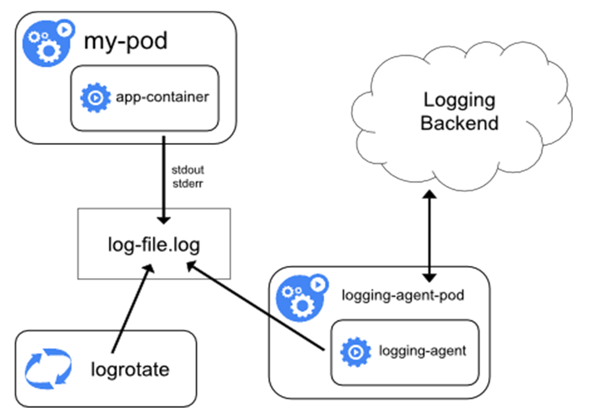
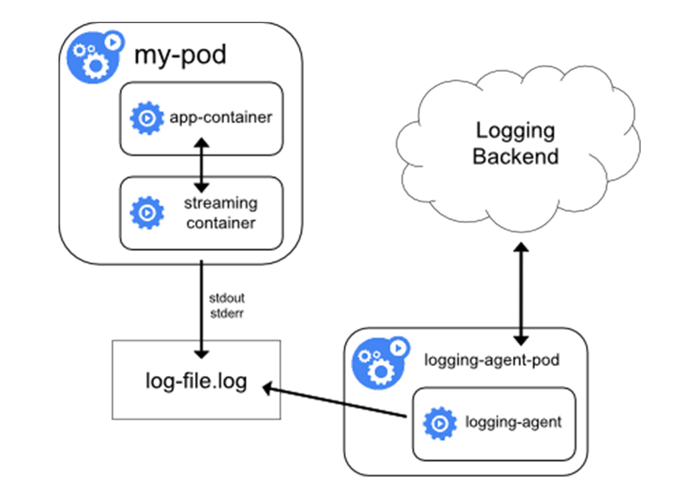
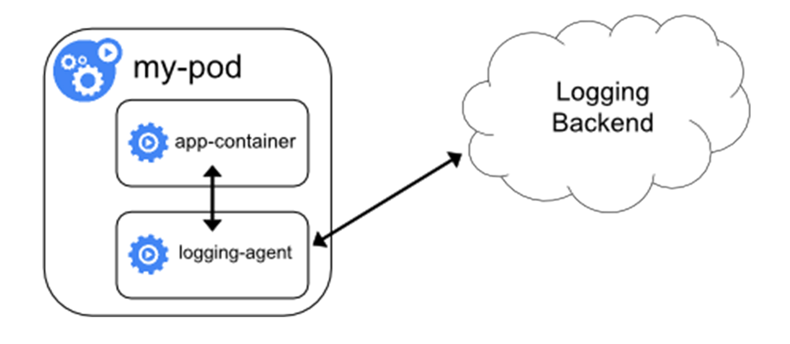
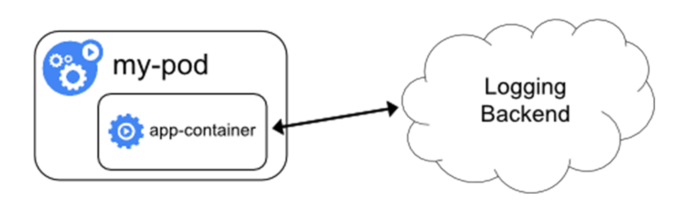

# 让日志无处可逃：容器日志收集与管理
在前面的文章中，我为你详细讲解了 Kubernetes 的核心监控体系和自定义监控体系的设计与实现思路。而在本篇文章里，我就来为你详细介绍一下 Kubernetes 里关于容器日志的处理方式。
首先需要明确的是，Kubernetes 里面对容器日志的处理方式，都叫作 cluster-level-logging，即：这个日志处理系统，与容器、Pod 以及 Node 的生命周期都是完全无关的。这种设计当然是为了保证，无论是容器挂了、Pod 被删除，甚至节点宕机的时候，应用的日志依然可以被正常获取到。
而对于一个容器来说，当应用把日志输出到 stdout 和 stderr 之后，容器项目在默认情况下就会把这些日志输出到宿主机上的一个 JSON 文件里。这样，你通过 kubectl logs 命令就可以看到这些容器的日志了。
上述机制，就是我们今天要讲解的容器日志收集的基础假设。而如果你的应用是把文件输出到其他地方，比如直接输出到了容器里的某个文件里，或者输出到了远程存储里，那就属于特殊情况了。当然，我在文章里也会对这些特殊情况的处理方法进行讲述。
而 Kubernetes 本身，实际上是不会为你做容器日志收集工作的，所以为了实现上述 cluster-level-logging，你需要在部署集群的时候，提前对具体的日志方案进行规划。而 Kubernetes 项目本身，主要为你推荐了三种日志方案。
** 第一种，在 Node 上部署 logging agent，将日志文件转发到后端存储里保存起来。** 这个方案的架构图如下所示。

不难看到，这里的核心就在于 logging agent ，它一般都会以 DaemonSet 的方式运行在节点上，然后将宿主机上的容器日志目录挂载进去，最后由 logging-agent 把日志转发出去。
举个例子，我们可以通过 Fluentd 项目作为宿主机上的 logging-agent，然后把日志转发到远端的 ElasticSearch 里保存起来供将来进行检索。具体的操作过程，你可以通过阅读这篇文档来了解。另外，在很多 Kubernetes 的部署里，会自动为你启用 logrotate，在日志文件超过 10MB 的时候自动对日志文件进行 rotate 操作。
可以看到，在 Node 上部署 logging agent 最大的优点，在于一个节点只需要部署一个 agent，并且不会对应用和 Pod 有任何侵入性。所以，这个方案，在社区里是最常用的一种。
但是也不难看到，这种方案的不足之处就在于，它要求应用输出的日志，都必须是直接输出到容器的 stdout 和 stderr 里。
所以，**Kubernetes 容器日志方案的第二种，就是对这种特殊情况的一个处理，即：当容器的日志只能输出到某些文件里的时候，我们可以通过一个 sidecar 容器把这些日志文件重新输出到 sidecar 的 stdout 和 stderr 上，这样就能够继续使用第一种方案了。** 这个方案的具体工作原理，如下所示。

比如，现在我的应用 Pod 只有一个容器，它会把日志输出到容器里的 /var/log/1.log 和 2.log 这两个文件里。这个 Pod 的 YAML 文件如下所示：
apiVersion: v1
kind: Pod
metadata:
name: counter
spec:
containers:
- name: count
image: busybox
args:
- /bin/sh
- -c
- >
i=0;
while true;
do
echo "$i: $(date)" >> /var/log/1.log;
echo "$(date) INFO $i" >> /var/log/2.log;
i=$((i+1));
sleep 1;
done
volumeMounts:
- name: varlog
mountPath: /var/log
volumes:
- name: varlog
emptyDir: {}
在这种情况下，你用 kubectl logs 命令是看不到应用的任何日志的。而且我们前面讲解的、最常用的方案一，也是没办法使用的。
那么这个时候，我们就可以为这个 Pod 添加两个 sidecar 容器，分别将上述两个日志文件里的内容重新以 stdout 和 stderr 的方式输出出来，这个 YAML 文件的写法如下所示：
apiVersion: v1
kind: Pod
metadata:
name: counter
spec:
containers:
- name: count
image: busybox
args:
- /bin/sh
- -c
- >
i=0;
while true;
do
echo "$i: $(date)" >> /var/log/1.log;
echo "$(date) INFO $i" >> /var/log/2.log;
i=$((i+1));
sleep 1;
done
volumeMounts:
- name: varlog
mountPath: /var/log
- name: count-log-1
image: busybox
args: [/bin/sh, -c, 'tail -n+1 -f /var/log/1.log']
volumeMounts:
- name: varlog
mountPath: /var/log
- name: count-log-2
image: busybox
args: [/bin/sh, -c, 'tail -n+1 -f /var/log/2.log']
volumeMounts:
- name: varlog
mountPath: /var/log
volumes:
- name: varlog
emptyDir: {}
这时候，你就可以通过 kubectl logs 命令查看这两个 sidecar 容器的日志，间接看到应用的日志内容了，如下所示：
$ kubectl logs counter count-log-1
0: Mon Jan 1 00:00:00 UTC 2001
1: Mon Jan 1 00:00:01 UTC 2001
2: Mon Jan 1 00:00:02 UTC 2001
...
$ kubectl logs counter count-log-2
Mon Jan 1 00:00:00 UTC 2001 INFO 0
Mon Jan 1 00:00:01 UTC 2001 INFO 1
Mon Jan 1 00:00:02 UTC 2001 INFO 2
...
由于 sidecar 跟主容器之间是共享 Volume 的，所以这里的 sidecar 方案的额外性能损耗并不高，也就是多占用一点 CPU 和内存罢了。
但需要注意的是，这时候，宿主机上实际上会存在两份相同的日志文件：一份是应用自己写入的；另一份则是 sidecar 的 stdout 和 stderr 对应的 JSON 文件。这对磁盘是很大的浪费。所以说，除非万不得已或者应用容器完全不可能被修改，否则我还是建议你直接使用方案一，或者直接使用下面的第三种方案。
** 第三种方案，就是通过一个 sidecar 容器，直接把应用的日志文件发送到远程存储里面去。** 也就是相当于把方案一里的 logging agent，放在了应用 Pod 里。这种方案的架构如下所示：

在这种方案里，你的应用还可以直接把日志输出到固定的文件里而不是 stdout，你的 logging-agent 还可以使用 fluentd，后端存储还可以是 ElasticSearch。只不过， fluentd 的输入源，变成了应用的日志文件。一般来说，我们会把 fluentd 的输入源配置保存在一个 ConfigMap 里，如下所示：
apiVersion: v1
kind: ConfigMap
metadata:
name: fluentd-config
data:
fluentd.conf: |
<source>
type tail
format none
path /var/log/1.log
pos_file /var/log/1.log.pos
tag count.format1
</source>
<source>
type tail
format none
path /var/log/2.log
pos_file /var/log/2.log.pos
tag count.format2
</source>
<match **>
type google_cloud
</match>
然后，我们在应用 Pod 的定义里，就可以声明一个 Fluentd 容器作为 sidecar，专门负责将应用生成的 1.log 和 2.log 转发到 ElasticSearch 当中。这个配置，如下所示：
apiVersion: v1
kind: Pod
metadata:
name: counter
spec:
containers:
- name: count
image: busybox
args:
- /bin/sh
- -c
- >
i=0;
while true;
do
echo "$i: $(date)" >> /var/log/1.log;
echo "$(date) INFO $i" >> /var/log/2.log;
i=$((i+1));
sleep 1;
done
volumeMounts:
- name: varlog
mountPath: /var/log
- name: count-agent
image: k8s.gcr.io/fluentd-gcp:1.30
env:
- name: FLUENTD_ARGS
value: -c /etc/fluentd-config/fluentd.conf
volumeMounts:
- name: varlog
mountPath: /var/log
- name: config-volume
mountPath: /etc/fluentd-config
volumes:
- name: varlog
emptyDir: {}
- name: config-volume
configMap:
name: fluentd-config
可以看到，这个 Fluentd 容器使用的输入源，就是通过引用我们前面编写的 ConfigMap 来指定的。这里我用到了 Projected Volume 来把 ConfigMap 挂载到 Pod 里。如果你对这个用法不熟悉的话，可以再回顾下第 15 篇文章《 深入解析 Pod 对象（二）：使用进阶》中的相关内容。
需要注意的是，这种方案虽然部署简单，并且对宿主机非常友好，但是这个 sidecar 容器很可能会消耗较多的资源，甚至拖垮应用容器。并且，由于日志还是没有输出到 stdout 上，所以你通过 kubectl logs 是看不到任何日志输出的。
以上，就是 Kubernetes 项目对容器应用日志进行管理最常用的三种手段了。
总结
在本篇文章中，我为你详细讲解了 Kubernetes 项目对容器应用日志的收集方式。综合对比以上三种方案，我比较建议你将应用日志输出到 stdout 和 stderr，然后通过在宿主机上部署 logging-agent 的方式来集中处理日志。
这种方案不仅管理简单，kubectl logs 也可以用，而且可靠性高，并且宿主机本身，很可能就自带了 rsyslogd 等非常成熟的日志收集组件来供你使用。
除此之外，还有一种方式就是在编写应用的时候，就直接指定好日志的存储后端，如下所示：

在这种方案下，Kubernetes 就完全不必操心容器日志的收集了，这对于本身已经有完善的日志处理系统的公司来说，是一个非常好的选择。
最后需要指出的是，无论是哪种方案，你都必须要及时将这些日志文件从宿主机上清理掉，或者给日志目录专门挂载一些容量巨大的远程盘。否则，一旦主磁盘分区被打满，整个系统就可能会陷入崩溃状态，这是非常麻烦的。
思考题
请问，当日志量很大的时候，直接将日志输出到容器 stdout 和 stderr 上，有没有什么隐患呢？有没有解决办法呢？
你还有哪些容器收集的方案，是否可以分享一下？